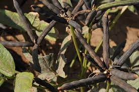

Black gram (Phaseolus mungo Roxb.,) is a highly prized pulse, very rich in phosphoric acid. It is also used in preparing papad (a kind of wafer) and barian (spiced balls of ground dal) and together with rice in preparing dosa and idli. The main areas of production being Madhya Pradesh, Uttar Pradesh, Punjab, Maharashtra, West Bengal, Andhra Pradesh, and Karnataka.
It is grown as rainfed crop in the warm plains as well as in the cool hills, up to an altitude of 2,000 metres. The cooking quality of black gram produced in the hills or in moist climate is claimed to be better.
It prefers water retentive, stiff loamy or heavy soils, and does well on both black cotton soils and brown alluviums.
'T 9', 'T 27', 'T 77', 'No. 55', 'Khargone-3', 'Mash-48', 'G 31', 'Pusa-1', 'H 10', 'UPU-1',' UPU-2', T.P.U.-4, T.A.U.-1, T.A.U-2
For the pure crop in the kharif season, the land is ploughed once or twice and harrowed to obtain a rough tilth. The crop can be sown dry in furrows in between the rows of the previous crop, followed by irrigation.
The sowing may be done either in February (early spring) or June-July (rainy season) or October-November (autum), depending on climatic and agricultural conditions and the variety grown. The seed rate is 10-15kg ha.
Manuring with 25-40kg per ha of phosphorus (P2O5) and 25kg per ha of nitrogen (N) should be given at the time sowing. Also seed treatment with biofertilizer viz. Rhizobium at the rate of 25gram per kg of seed is beneficial.
Being kharif crop black gram is not required irrigation unless there is dry spell during the kharif season. Irrigation should be given according to soil type. Irrigation interval should be 8-10 days in summer. Flowering and pod filling are the critical stages for irrigation.
The nymphs and adults suck the sap. The affected leaves turns yellow, get wrinkled and distorted. The insect also exude honeydew on which fungus develops, rapidly covers the plant with sooty mould that interferes with the photosynthetic activity of the plant.
Spraying with 0.05% Endosulfan, 0.02% Phosphamidon, 0.03% Dimethoate, Methyl demeton or Thiometon control the pest effectively.
The adults and nymphs feed on leaves. They scrape the epidermis and such the oozing sap. As a result, light brown patches appear on infested leaves. The affected leaves curl and become dry.The adults and nymphs feed on leaves. They scrape the epidermis and such the oozing sap. As a result, light brown patches appear on infested leaves. The affected leaves curl and become dry.
Spraying with 0.05% Endosulfan, 0.02% Phosphamidon, 0.03% Dimethoate, Methyl demeton or Thiometon control the pest effectively.
Caterpillars feed on tender foliage and young pods. They make holes in the pods and feed on developing seeds by inserting anterior half portion of their body inside the pods.
In early stage of attack handpicking of the caterpillars and their destruction. Ploughing fields after the harvest of crop would expose the pupae, which would be destroyed by birds. Spraying the crop with 0.05% Quinalphos or Fenitrohion can successfully control the pest. Spray with HaNPV @ 250 LE/ha.
Angular brown or red spots, with grey or brown centre and reddish-purple border on leave, stalk and pods
White powdery patches on leaves and other green parts, later becoming dull coloured and are studded with black dot.
Dust the crop with finely powdered sulphur (200-mesh) @ 20kg/ha.
To avoid loss because of the shattering of pods, the crop is harvested before it is dead ripe. One or two rounds of the picking of pods are also recommended to avoid losses because of the shattering.
The plants are uprooted or cut with a sickle, are dried on the threshing-floor for a week or ten days and threshed by beating with sticks, and are winnowed with baskets. The average yield of grain from a pure crop varieties from 5-6q per ha, whereas yields up to 10-15q per ha.